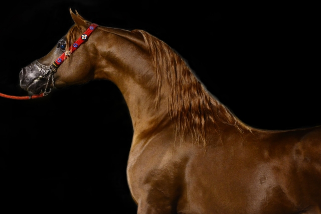

| ウマとは |
社会性の強い動物で、野生のものも家畜も群れをなす傾向があります。
オス馬は歯をむき出しにして、あたかも笑っているような表情を見せることがある。これを「フレーメン」と呼びます。メス馬のフェロモンをよく嗅ぎ取れるようにしています。 |
| アンサー① |
運搬用、農耕用、乗用、軍用、競技用、( 食用 )など人間との関係性は高くあります。 |
|
|
古くから中央アジア、中東、北アフリカなどで家畜として飼われた歴史があります。
|
| アンサー② |
各脚には( 3番目 )の指しかなく、他の指は退化したとされています。よく発達した蹄を持っています。 |
|
|
硬い蹄のおかげで、硬い土の上を走ることが出来ます。
|
| アンサー③ |
国によって好物とされる食べ物は異なる。日本では( にんじん )とされています。 |
|
|
国によって「リンゴが好物」や「角砂糖が好物」（トルコ）など、様々に言われています。
硬くて甘味の強い食物全般を好むとされています。
|
| アンサー④ |
顔の両側に目が位置するため視野が広く、( 350度 )ほどあるとされています。 |
|
|
両眼視出来る範囲は狭いため、距離感を掴むことは苦手とするなど、ヒトとはやや異なった視覚認知を持ちます。
|
| アンサー⑤ |
メスの妊娠期間は335日で、寿命は( 約25年 )です。 |
|
|
繁殖期は春で、単子であること（一回の妊娠で宿す子が一頭であること）が多いです。
|
| アンサー⑥ |
後脚立ちすることを( リアリング )といい、驚いた時や攻撃的な時などに行います。 |
|
|
驚いた時、興奮した時、攻撃的になっている時、人間に従いたくない時、背中に乗っている人間を振り落としたい時などに行います。
|